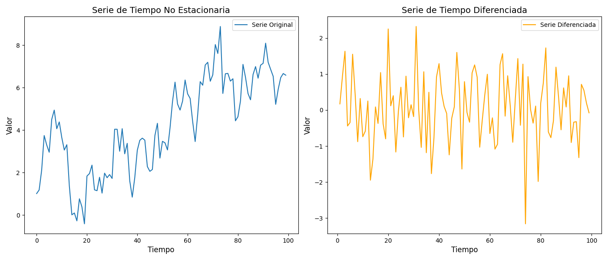

Series de Tiempo#
“The way I see it, every life is a pile of good things and bad things. The good things don’t always soften the bad things, but vice versa, the bad things don’t always spoil the good things and make them unimportant.” — The Doctor
“It’s tough to make predictions, especially about the future.” — Yogi Berra
Introducción#
Las series de tiempo son una de las herramientas más poderosas en la econometría aplicada. En esencia, una serie de tiempo combina modelos estadísticos con registros de datos ordenados cronológicamente para encontrar patrones y hacer pronósticos.
¿Para qué sirven las series de tiempo en los negocios y la economía?
Proyección de ventas: Estimar cuánto venderá una empresa en los próximos meses o años.
Predicción de demanda: Anticipar la demanda de un producto para optimizar inventarios.
Finanzas: Modelar el comportamiento de precios de acciones, tipos de cambio y tasas de interés.
Energía: Pronosticar el consumo eléctrico o la producción de energía renovable.
Mercados: Analizar tendencias en mercados de commodities, bienes raíces y más.
Inventarios: Planificar la cadena de suministro con base en patrones históricos.
En este capítulo aprenderemos los fundamentos de los modelos de series de tiempo, desde la caminata aleatoria hasta el modelo ARIMA, con ejemplos prácticos en Python.
Un ejemplo de una Serie de Tiempo#
Comencemos con el modelo más sencillo de una serie de tiempo: la caminata aleatoria (random walk).
La caminata aleatoria se define como:
donde \(\varepsilon_t \sim N(0, \sigma^2)\) es un término de error aleatorio (ruido blanco).
En palabras simples: el valor de hoy es igual al valor de ayer más un choque aleatorio. No hay tendencia, no hay patrón predecible. Es como lanzar una moneda en cada paso y decidir si subes o bajas.
A pesar de su simplicidad, la caminata aleatoria es un modelo fundamental porque muchas series financieras se comportan de forma similar. Si los precios de una acción siguen una caminata aleatoria, entonces no es posible predecir su dirección futura con base en su historia.
Simulemos una caminata aleatoria con Python.

import numpy as np
import matplotlib.pyplot as plt
np.random.seed(42)
N = 100
sigma = 1
X_0 = 0
X_t = np.zeros(N)
X_t[0] = X_0
for t in range(1, N):
epsilon = np.random.normal(0, sigma)
X_t[t] = X_t[t-1] + epsilon
plt.figure(figsize=(10, 6))
plt.plot(X_t, label='$X_t$')
plt.xlabel('Paso del tiempo')
plt.ylabel('Valor')
plt.title('Simulación de $X_t = X_{t-1} + \\varepsilon$')
plt.legend()
plt.grid(True)
plt.show()
Observa cómo la serie parece tener tendencias y patrones, pero en realidad es completamente aleatoria. Esto es una propiedad importante de la caminata aleatoria: puede engañar al ojo humano haciéndonos creer que hay un patrón donde no lo hay.
Estacionariedad#
Una serie de tiempo es estacionaria si sus propiedades estadísticas (media, varianza y autocovarianza) no cambian a lo largo del tiempo. La estacionariedad es un supuesto fundamental para la mayoría de los modelos de series de tiempo.
Una caminata aleatoria no es estacionaria porque su varianza crece con el tiempo: \(\text{Var}(X_t) = t \cdot \sigma^2\).
¿Cómo sabemos si una serie es estacionaria o no? Podemos usar la prueba de Dickey-Fuller Aumentada (ADF, por sus siglas en inglés). Esta prueba tiene las siguientes hipótesis:
\(H_0\): La serie tiene una raíz unitaria (no es estacionaria).
\(H_1\): La serie es estacionaria.
Si el p-valor es menor a 0.05, rechazamos \(H_0\) y concluimos que la serie es estacionaria.
Cuando una serie no es estacionaria, una técnica común es diferenciarla. La primera diferencia de una serie \(Y_t\) se define como:
Si la serie original no es estacionaria pero su primera diferencia sí lo es, decimos que la serie es integrada de orden 1, o \(I(1)\).
Veamos un ejemplo donde simulamos una serie no estacionaria, la diferenciamos y aplicamos la prueba ADF a ambas.

import numpy as np
import pandas as pd
import matplotlib.pyplot as plt
from statsmodels.tsa.stattools import adfuller
np.random.seed(42)
n = 100
beta0 = 0.5
beta1 = 0.01
phi = 0.8
epsilon = np.random.normal(0, 1, n)
t = np.arange(n)
y = np.empty(n)
y[0] = beta0 + beta1 + epsilon[0]
for i in range(1, n):
y[i] = beta0 + beta1 * t[i] + phi * y[i-1] + epsilon[i]
y_diff = np.diff(y)
adf_result_original = adfuller(y)
adf_result_diff = adfuller(y_diff)
fig, axs = plt.subplots(1, 2, figsize=(14, 6))
axs[0].plot(t, y, label='Serie Original')
axs[0].set_title('Serie de Tiempo No Estacionaria', fontsize=14)
axs[0].set_xlabel('Tiempo', fontsize=12)
axs[0].set_ylabel('Valor', fontsize=12)
axs[0].legend()
axs[1].plot(t[1:], y_diff, label='Serie Diferenciada', color='orange')
axs[1].set_title('Serie de Tiempo Diferenciada', fontsize=14)
axs[1].set_xlabel('Tiempo', fontsize=12)
axs[1].set_ylabel('Valor', fontsize=12)
axs[1].legend()
plt.tight_layout()
plt.show()
print("--- Prueba ADF: Serie Original ---")
print(f"Estadístico ADF: {adf_result_original[0]:.4f}")
print(f"p-valor: {adf_result_original[1]:.4f}")
print()
print("--- Prueba ADF: Serie Diferenciada ---")
print(f"Estadístico ADF: {adf_result_diff[0]:.4f}")
print(f"p-valor: {adf_result_diff[1]:.4f}")
--- Prueba ADF: Serie Original ---
Estadístico ADF: -2.2971
p-valor: 0.1729
--- Prueba ADF: Serie Diferenciada ---
Estadístico ADF: -6.6163
p-valor: 0.0000
Como puedes ver, la serie original probablemente no pasa la prueba ADF (p-valor alto), lo que indica que no es estacionaria. Pero al diferenciarla, el p-valor cae drásticamente, confirmando que la serie diferenciada sí es estacionaria.
Este concepto de diferenciar para lograr estacionariedad es la base de la I en ARIMA.
El modelo ARIMA#
ARIMA significa AutoRegressive Integrated Moving Average. Vamos a construir la intuición paso a paso.
La parte Autorregresiva: AR(p)#
Un modelo autorregresivo de orden 1, o AR(1), dice que el valor actual de la serie depende de su valor anterior más un error:
donde \(c\) es una constante, \(\phi_1\) es el coeficiente autorregresivo y \(\varepsilon_t\) es ruido blanco.
Si \(|\phi_1| < 1\), la serie es estacionaria. Si \(\phi_1 = 1\), tenemos una caminata aleatoria.
Podemos generalizar a un modelo AR(p) que incluye \(p\) rezagos:
Piénsalo así: las ventas de hoy dependen de las ventas de los últimos \(p\) días. Un modelo AR(3) usa los tres valores previos para predecir el actual.
Simulemos un proceso AR(3) con 1000 observaciones.

import numpy as np
import matplotlib.pyplot as plt
np.random.seed(42)
n = 1000
phi = [0.5, -0.2, 0.1] # Coeficientes AR(3)
p = len(phi)
epsilon = np.random.normal(0, 1, n)
y = np.zeros(n)
for t in range(p, n):
y[t] = phi[0] * y[t-1] + phi[1] * y[t-2] + phi[2] * y[t-3] + epsilon[t]
plt.figure(figsize=(12, 5))
plt.plot(y, linewidth=0.8)
plt.title('Simulación de un proceso AR(3)', fontsize=14)
plt.xlabel('Tiempo', fontsize=12)
plt.ylabel('Valor', fontsize=12)
plt.grid(True, alpha=0.3)
plt.show()
Ahora verifiquemos que esta serie simulada es estacionaria usando la prueba ADF.
from statsmodels.tsa.stattools import adfuller
adf_result = adfuller(y)
print("--- Prueba de Dickey-Fuller Aumentada ---")
print(f"Estadístico ADF: {adf_result[0]:.4f}")
print(f"p-valor: {adf_result[1]:.6f}")
print(f"Número de rezagos usados: {adf_result[2]}")
print(f"Número de observaciones: {adf_result[3]}")
print("Valores críticos:")
for key, value in adf_result[4].items():
print(f" {key}: {value:.4f}")
if adf_result[1] < 0.05:
print("\nConclusión: Rechazamos H0. La serie ES estacionaria.")
else:
print("\nConclusión: No rechazamos H0. La serie NO es estacionaria.")
--- Prueba de Dickey-Fuller Aumentada ---
Estadístico ADF: -15.3109
p-valor: 0.000000
Número de rezagos usados: 2
Número de observaciones: 997
Valores críticos:
1%: -3.4369
5%: -2.8644
10%: -2.5683
Conclusión: Rechazamos H0. La serie ES estacionaria.
Datos reales: El IGAE de México#
Ahora trabajemos con datos reales. El Indicador Global de la Actividad Económica (IGAE) es un indicador mensual publicado por el INEGI que mide la evolución de la actividad económica en México. Es como un PIB mensual.
Vamos a cargar los datos del IGAE y explorar su comportamiento.

import pandas as pd
import matplotlib.pyplot as plt
# Cargar datos del IGAE desde INEGI
url = "https://www.inegi.org.mx/contenidos/programas/igae/2018/tabulados/igae_tabla.xlsx"
try:
igae = pd.read_excel(url)
print("Datos cargados exitosamente.")
print(igae.head())
print(f"\nDimensiones: {igae.shape}")
except Exception as e:
print(f"No se pudieron cargar los datos desde INEGI: {e}")
print("Generando datos sintéticos del IGAE para continuar el ejemplo...")
np.random.seed(42)
fechas = pd.date_range(start='2010-01-01', periods=168, freq='MS')
tendencia = np.linspace(90, 115, 168)
estacionalidad = 3 * np.sin(2 * np.pi * np.arange(168) / 12)
ruido = np.random.normal(0, 1.5, 168)
valores = tendencia + estacionalidad + ruido
# Simular caída por COVID
valores[122:128] = valores[122:128] - np.array([5, 15, 20, 12, 8, 3])
igae = pd.DataFrame({'Fecha': fechas, 'IGAE': valores})
igae.set_index('Fecha', inplace=True)
plt.figure(figsize=(12, 5))
if 'Fecha' in igae.columns:
plt.plot(igae['Fecha'], igae.iloc[:, 1])
else:
plt.plot(igae.index, igae.iloc[:, 0])
plt.title('Indicador Global de la Actividad Económica (IGAE)', fontsize=14)
plt.xlabel('Fecha', fontsize=12)
plt.ylabel('Índice', fontsize=12)
plt.grid(True, alpha=0.3)
plt.tight_layout()
plt.show()
No se pudieron cargar los datos desde INEGI: Excel file format cannot be determined, you must specify an engine manually.
Generando datos sintéticos del IGAE para continuar el ejemplo...
Funciones de Autocorrelación (ACF) y Autocorrelación Parcial (PACF)#
Para decidir qué modelo usar, necesitamos herramientas de diagnóstico. Las dos más importantes son:
ACF (Función de Autocorrelación): Mide la correlación entre \(Y_t\) y \(Y_{t-k}\) para diferentes rezagos \(k\). Incluye efectos directos e indirectos.
PACF (Función de Autocorrelación Parcial): Mide la correlación entre \(Y_t\) y \(Y_{t-k}\) eliminando el efecto de los rezagos intermedios.
Reglas generales para identificar modelos:
Modelo |
ACF |
PACF |
|---|---|---|
AR(p) |
Decae gradualmente |
Se corta después del rezago \(p\) |
MA(q) |
Se corta después del rezago \(q\) |
Decae gradualmente |
ARMA(p,q) |
Decae gradualmente |
Decae gradualmente |
Veamos las gráficas ACF y PACF de los datos del IGAE, tanto en su forma original como diferenciada.

from statsmodels.graphics.tsaplots import plot_acf, plot_pacf
# Usar la serie del IGAE
if 'Fecha' in igae.columns:
serie = igae.iloc[:, 1].dropna().values
else:
serie = igae.iloc[:, 0].dropna().values
fig, axs = plt.subplots(1, 2, figsize=(14, 5))
plot_acf(serie, lags=30, ax=axs[0])
axs[0].set_title('ACF - Serie Original', fontsize=14)
plot_pacf(serie, lags=30, ax=axs[1])
axs[1].set_title('PACF - Serie Original', fontsize=14)
plt.tight_layout()
plt.show()
/usr/local/lib/python3.9/site-packages/statsmodels/graphics/tsaplots.py:348: FutureWarning: The default method 'yw' can produce PACF values outside of the [-1,1] interval. After 0.13, the default will change tounadjusted Yule-Walker ('ywm'). You can use this method now by setting method='ywm'.
warnings.warn(
Ahora veamos la ACF y PACF de la serie diferenciada.

serie_diff = np.diff(serie)
fig, axs = plt.subplots(1, 2, figsize=(14, 5))
plot_acf(serie_diff, lags=30, ax=axs[0])
axs[0].set_title('ACF - Serie Diferenciada', fontsize=14)
plot_pacf(serie_diff, lags=30, ax=axs[1])
axs[1].set_title('PACF - Serie Diferenciada', fontsize=14)
plt.tight_layout()
plt.show()
Ajustando un modelo AR(3)#
Supongamos que con base en el análisis de ACF/PACF decidimos ajustar un modelo AR(3). Usaremos la función AutoReg de statsmodels.
from statsmodels.tsa.ar_model import AutoReg
# Ajustar un modelo AR(3) a la serie diferenciada
modelo_ar3 = AutoReg(serie_diff, lags=3).fit()
print(modelo_ar3.summary())
AutoReg Model Results
==============================================================================
Dep. Variable: y No. Observations: 167
Model: AutoReg(3) Log Likelihood -387.489
Method: Conditional MLE S.D. of innovations 2.570
Date: Mon, 02 Feb 2026 AIC 784.979
Time: 13:32:23 BIC 800.478
Sample: 3 HQIC 791.271
167
==============================================================================
coef std err z P>|z| [0.025 0.975]
------------------------------------------------------------------------------
const 0.1431 0.202 0.710 0.478 -0.252 0.538
y.L1 -0.1777 0.078 -2.275 0.023 -0.331 -0.025
y.L2 -0.0272 0.079 -0.343 0.731 -0.182 0.128
y.L3 0.0530 0.078 0.680 0.497 -0.100 0.206
Roots
=============================================================================
Real Imaginary Modulus Frequency
-----------------------------------------------------------------------------
AR.1 -1.3857 -1.9564j 2.3974 -0.3481
AR.2 -1.3857 +1.9564j 2.3974 0.3481
AR.3 3.2842 -0.0000j 3.2842 -0.0000
-----------------------------------------------------------------------------
Selección de modelo con AIC y BIC#
¿Cómo elegimos entre un AR(2), AR(3) o AR(4)? Usamos criterios de información:
AIC (Criterio de Información de Akaike): Penaliza la complejidad del modelo. Menor es mejor.
BIC (Criterio de Información Bayesiano): Similar al AIC pero con una penalización más fuerte por complejidad. Menor es mejor.
donde \(k\) es el número de parámetros, \(n\) es el número de observaciones y \(\hat{L}\) es la verosimilitud maximizada.
from statsmodels.tsa.ar_model import AutoReg
resultados = []
for p in [2, 3, 4]:
modelo = AutoReg(serie_diff, lags=p).fit()
resultados.append({
'Modelo': f'AR({p})',
'AIC': modelo.aic,
'BIC': modelo.bic
})
df_resultados = pd.DataFrame(resultados)
print("Comparación de modelos AR:")
print(df_resultados.to_string(index=False))
print(f"\nMejor modelo según AIC: {df_resultados.loc[df_resultados['AIC'].idxmin(), 'Modelo']}")
print(f"Mejor modelo según BIC: {df_resultados.loc[df_resultados['BIC'].idxmin(), 'Modelo']}")
Comparación de modelos AR:
Modelo AIC BIC
AR(2) 787.873147 800.296929
AR(3) 784.978863 800.478195
AR(4) 770.422529 788.985030
Mejor modelo según AIC: AR(4)
Mejor modelo según BIC: AR(4)
Pronóstico con el modelo AR#
Ahora vamos a dividir nuestra serie en un conjunto de entrenamiento y uno de prueba para evaluar qué tan bien predice nuestro modelo.
El Error Absoluto Medio (MAE) nos dice, en promedio, cuánto se desvían nuestras predicciones de los valores reales:

from sklearn.metrics import mean_absolute_error
# Dividir en entrenamiento (80%) y prueba (20%)
n_train = int(len(serie_diff) * 0.8)
train = serie_diff[:n_train]
test = serie_diff[n_train:]
# Ajustar modelo AR(3) en datos de entrenamiento
modelo = AutoReg(train, lags=3).fit()
# Pronóstico
predicciones = modelo.predict(start=n_train, end=len(serie_diff)-1)
# Calcular MAE
mae = mean_absolute_error(test, predicciones)
print(f"Error Absoluto Medio (MAE): {mae:.4f}")
# Gráfica
plt.figure(figsize=(12, 5))
plt.plot(range(len(train)), train, label='Entrenamiento', color='blue')
plt.plot(range(n_train, len(serie_diff)), test, label='Datos reales (prueba)', color='green')
plt.plot(range(n_train, len(serie_diff)), predicciones, label='Pronóstico AR(3)', color='red', linestyle='--')
plt.axvline(x=n_train, color='black', linestyle=':', label='División train/test')
plt.title('Pronóstico AR(3) vs Datos Reales', fontsize=14)
plt.xlabel('Tiempo', fontsize=12)
plt.ylabel('Valor (diferenciado)', fontsize=12)
plt.legend()
plt.grid(True, alpha=0.3)
plt.tight_layout()
plt.show()
Error Absoluto Medio (MAE): 2.0007
Medias Móviles: La MA de ARIMA#
La parte de Medias Móviles (MA) del modelo ARIMA captura la dependencia entre \(Y_t\) y los errores pasados. Un modelo MA(q) se define como:
Cuando combinamos la parte AR con la parte MA, obtenemos un modelo ARMA(p, q):
La intuición es la siguiente:
La parte AR captura cómo el pasado de la serie afecta al presente.
La parte MA captura cómo los choques (errores) pasados afectan al presente.
Simulemos un proceso ARMA(1,3) y ajustemos un modelo.

from statsmodels.tsa.arima.model import ARIMA
np.random.seed(42)
n = 500
# Parámetros ARMA(1,3)
phi_1 = 0.6 # Coeficiente AR
theta = [0.4, -0.3, 0.2] # Coeficientes MA
epsilon = np.random.normal(0, 1, n + 10) # extra para inicialización
y_arma = np.zeros(n + 10)
for t in range(4, n + 10):
y_arma[t] = (phi_1 * y_arma[t-1] + epsilon[t]
+ theta[0] * epsilon[t-1]
+ theta[1] * epsilon[t-2]
+ theta[2] * epsilon[t-3])
y_arma = y_arma[10:] # Descartar observaciones de inicialización
# Ajustar modelo ARMA(1,3) usando ARIMA con d=0
modelo_arma = ARIMA(y_arma, order=(1, 0, 3)).fit()
print(modelo_arma.summary())
# Predicciones in-sample
pred_arma = modelo_arma.fittedvalues
plt.figure(figsize=(12, 5))
plt.plot(y_arma, label='Serie simulada ARMA(1,3)', alpha=0.7)
plt.plot(pred_arma, label='Valores ajustados', color='red', alpha=0.7)
plt.title('Modelo ARMA(1,3): Datos vs Valores Ajustados', fontsize=14)
plt.xlabel('Tiempo', fontsize=12)
plt.ylabel('Valor', fontsize=12)
plt.legend()
plt.grid(True, alpha=0.3)
plt.tight_layout()
plt.show()
SARIMAX Results
==============================================================================
Dep. Variable: y No. Observations: 500
Model: ARIMA(1, 0, 3) Log Likelihood -701.577
Date: Mon, 02 Feb 2026 AIC 1415.153
Time: 13:32:24 BIC 1440.441
Sample: 0 HQIC 1425.076
- 500
Covariance Type: opg
==============================================================================
coef std err z P>|z| [0.025 0.975]
------------------------------------------------------------------------------
const -0.0068 0.131 -0.052 0.958 -0.263 0.249
ar.L1 0.4538 0.135 3.356 0.001 0.189 0.719
ma.L1 0.5358 0.136 3.947 0.000 0.270 0.802
ma.L2 -0.1644 0.148 -1.110 0.267 -0.455 0.126
ma.L3 0.2254 0.049 4.568 0.000 0.129 0.322
sigma2 0.9644 0.059 16.320 0.000 0.849 1.080
===================================================================================
Ljung-Box (L1) (Q): 0.00 Jarque-Bera (JB): 4.85
Prob(Q): 0.98 Prob(JB): 0.09
Heteroskedasticity (H): 1.21 Skew: 0.21
Prob(H) (two-sided): 0.22 Kurtosis: 3.23
===================================================================================
Warnings:
[1] Covariance matrix calculated using the outer product of gradients (complex-step).
Veamos la ACF y PACF del proceso ARMA simulado.

fig, axs = plt.subplots(1, 2, figsize=(14, 5))
plot_acf(y_arma, lags=30, ax=axs[0])
axs[0].set_title('ACF - Proceso ARMA(1,3)', fontsize=14)
plot_pacf(y_arma, lags=30, ax=axs[1])
axs[1].set_title('PACF - Proceso ARMA(1,3)', fontsize=14)
plt.tight_layout()
plt.show()
/usr/local/lib/python3.9/site-packages/statsmodels/graphics/tsaplots.py:348: FutureWarning: The default method 'yw' can produce PACF values outside of the [-1,1] interval. After 0.13, the default will change tounadjusted Yule-Walker ('ywm'). You can use this method now by setting method='ywm'.
warnings.warn(
Observa cómo tanto la ACF como la PACF decaen gradualmente, lo cual es consistente con un proceso ARMA. Esto contrasta con un proceso AR puro (donde la PACF se corta abruptamente) o un MA puro (donde la ACF se corta abruptamente).
¿Y la I del ARIMA?#
La I de ARIMA se refiere a Integración. Una serie es integrada de orden \(d\) si necesitamos diferenciarla \(d\) veces para hacerla estacionaria.
Un modelo ARIMA(p, d, q) aplica:
d diferenciaciones a la serie para hacerla estacionaria.
Un modelo ARMA(p, q) a la serie diferenciada.
Las fórmulas de diferenciación son:
Primera diferencia (\(d = 1\)): $\(\Delta Y_t = Y_t - Y_{t-1}\)$
Segunda diferencia (\(d = 2\)): $\(\Delta^2 Y_t = \Delta Y_t - \Delta Y_{t-1} = (Y_t - Y_{t-1}) - (Y_{t-1} - Y_{t-2}) = Y_t - 2Y_{t-1} + Y_{t-2}\)$
Tercera diferencia (\(d = 3\)): $\(\Delta^3 Y_t = Y_t - 3Y_{t-1} + 3Y_{t-2} - Y_{t-3}\)$
En la práctica, rara vez necesitamos más de \(d = 2\). La mayoría de las series económicas son \(I(1)\), es decir, se vuelven estacionarias con una sola diferencia.
Por lo tanto, un modelo ARIMA(1, 1, 1) significa:
Diferenciamos la serie una vez (\(d = 1\)).
Aplicamos un AR(1) y un MA(1) a la serie diferenciada.
Esto es exactamente lo que hicimos en secciones anteriores: primero diferenciamos y luego modelamos. ARIMA simplemente lo hace todo en un solo paso.
Apéndice#
Proceso estocástico#
Un proceso estocástico es una colección de variables aleatorias \(\{X_t\}\) indexadas por el tiempo \(t\). Formalmente, es una función \(X: T \times \Omega \rightarrow \mathbb{R}\), donde \(T\) es el conjunto de índices temporales y \(\Omega\) es el espacio muestral.
Una serie de tiempo es una realización de un proceso estocástico: es lo que observamos en la práctica. El proceso estocástico subyacente genera infinitas posibles realizaciones, pero nosotros sólo observamos una.
Ruido blanco#
Un proceso de ruido blanco \(\{\varepsilon_t\}\) satisface las siguientes condiciones:
\(E[\varepsilon_t] = 0\) para todo \(t\) (media cero).
\(\text{Var}(\varepsilon_t) = \sigma^2\) para todo \(t\) (varianza constante).
\(\text{Cov}(\varepsilon_t, \varepsilon_s) = 0\) para todo \(t \neq s\) (no hay autocorrelación).
El ruido blanco es el bloque fundamental de construcción de todos los modelos de series de tiempo. Es la parte que no podemos predecir: el componente puramente aleatorio.
Raíces unitarias#
Una raíz unitaria aparece cuando el polinomio característico del modelo AR tiene una raíz igual a 1. Consideremos un AR(1):
Reescrito como operador de rezago \(L\) (donde \(LY_t = Y_{t-1}\)):
La raíz del polinomio \((1 - \phi z) = 0\) es \(z = 1/\phi\). Si \(\phi = 1\), la raíz es 1, y tenemos una raíz unitaria. Esto significa que la serie es una caminata aleatoria y no es estacionaria.
La prueba de Dickey-Fuller que usamos anteriormente es precisamente una prueba para detectar raíces unitarias.
Resumen#
En este capítulo aprendimos los conceptos fundamentales de las series de tiempo:
Caminata aleatoria: El modelo más simple donde \(X_t = X_{t-1} + \varepsilon_t\).
Estacionariedad: Propiedad fundamental que requiere media y varianza constantes. Se verifica con la prueba ADF.
Diferenciación: Técnica para convertir una serie no estacionaria en estacionaria.
Modelos AR(p): El valor actual depende de \(p\) valores pasados.
Modelos MA(q): El valor actual depende de \(q\) errores pasados.
ARIMA(p,d,q): Combina AR, diferenciación y MA en un solo modelo.
ACF y PACF: Herramientas de diagnóstico para identificar el tipo de modelo.
AIC y BIC: Criterios para seleccionar el mejor modelo.
Las series de tiempo son una herramienta esencial para cualquier economista o científico de datos que necesite hacer pronósticos con datos históricos.
Ejercicios#
Simula una caminata aleatoria con 500 observaciones y \(\sigma = 2\). Grafica el resultado y aplica la prueba ADF. ¿Es estacionaria?
Genera un proceso AR(2) con coeficientes \(\phi_1 = 0.7\) y \(\phi_2 = -0.3\) y 1000 observaciones. Grafica la ACF y PACF. ¿La PACF se corta después del rezago 2?
Toma la serie del IGAE y ajusta un modelo ARIMA(1,1,1). Compara su AIC con un ARIMA(2,1,1) y un ARIMA(1,1,2). ¿Cuál es el mejor modelo?
Simula un proceso MA(2) con \(\theta_1 = 0.8\) y \(\theta_2 = -0.5\). Grafica la ACF. ¿Se corta después del rezago 2?
Descarga datos de ventas mensuales de alguna empresa pública (puedes usar Yahoo Finance). Aplica la prueba ADF. Si no es estacionaria, diferencia la serie y vuelve a aplicar la prueba.
Usando los datos del ejercicio anterior, divide en entrenamiento (80%) y prueba (20%). Ajusta un modelo ARIMA y calcula el MAE del pronóstico.
Simula una caminata aleatoria con deriva (drift): \(X_t = \mu + X_{t-1} + \varepsilon_t\) con \(\mu = 0.1\). ¿Cómo se ve diferente de una caminata aleatoria sin deriva?
Genera una serie estacionaria AR(1) con \(\phi = 0.9\) (cerca de una raíz unitaria) y otra con \(\phi = 0.3\). Grafica ambas. ¿Cuál se ve más parecida a una caminata aleatoria?
Investiga sobre el modelo SARIMA (ARIMA estacional). ¿Qué parámetros adicionales necesita? Ajusta un SARIMA a los datos del IGAE.
Compara las predicciones de un modelo ARIMA con un promedio móvil simple de 12 periodos. ¿Cuál tiene menor MAE en datos de prueba?